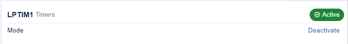
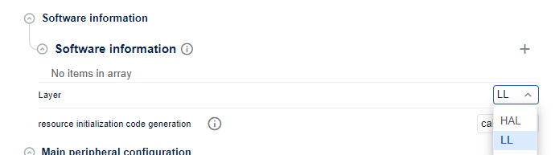
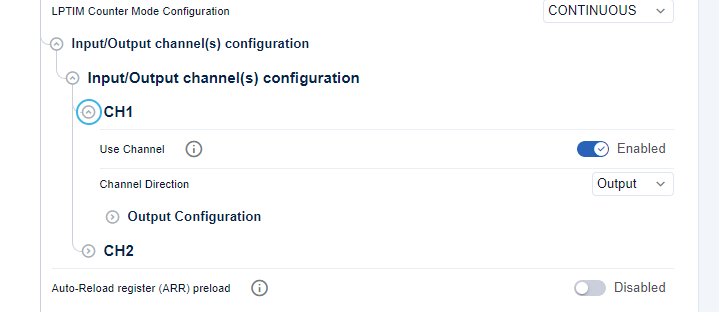
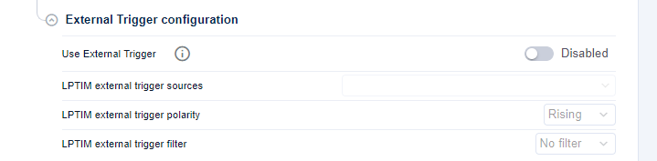
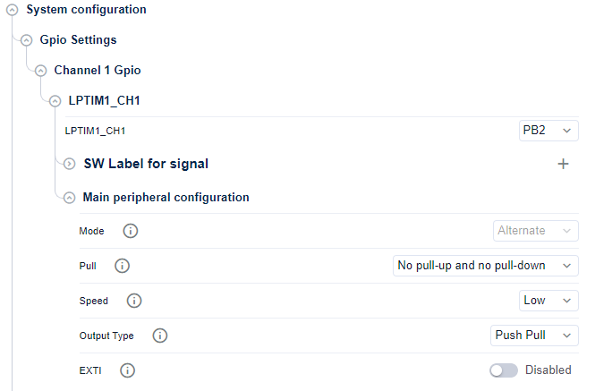
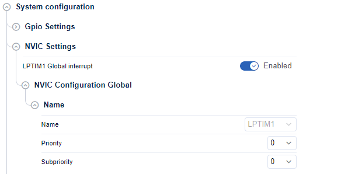

LL_LPTIM_Init and LL_LPTIM_DeInit APIs migration ¶
The LL initialization and de-initialization functions previously available in the
stm32tnxx_ll_lptim.c
files
within HAL1 are no longer present in HAL2.
In HAL2, all LL C files (
stm32tnxx_ll_lptim.c
) have been removed, leaving only the LL header files (
stm32tnxx_ll_lptim.h
)
that contain static inline functions.
If users need to initialize or de-initialize LPTIM using the LL layer, they have two methods:
-
Utilize STM32CubeMX2 Code Generation : Rely on STM32CubeMX2 to generate code with the LL layer for LPTIM initialization and de-initialization.
-
-
Replace manually the initialization and de-initialization functions
Replace the
LL_LPTIM_InitandLL_LPTIM_DeInitfunctions -
manually with equivalent sequences using the static inline functions provided in the
stm32tnxx_ll_lptim.hfile, tailored to their specific configuration and requirements.
-
Replace manually the initialization and de-initialization functions
Replace the
This approach ensures that the initialization and de-initialization sequences are precisely addressing the given use case based on the LL static inline functions provided in the
stm32tnxx_ll_lptim.h
header file.
The sequences offer improved footprint optimization compared to the previous LL initialization functions found in
stm32tnxx_ll_lptim.c
.
Related concept : Remove stm32tnxx_ll_ppp.c files
Method 1: Utilize STM32CubeMX2 Code Generation ¶
LPTIM configuration settings ¶
Create a new project with the STM32CubeMX2 , then start the initialisation and configuration.
-
Open STM32CubeMX2 LPTIM configuration panel
-
Configure the LPTIM instance




Output channel configuration for LPTIM ¶
-
Configure the LPTIM channel


External Trigger configuration for LPTIM ¶
-
Configure the LPTIM channel


GPIO configuration for LPTIM ¶
-
Configure the LPTIM channel


NVIC Configuration for LPTIM ¶
The NVIC configuration for LPTIM enables both event and error interrupts, with each set to priority 0 and subpriority 0.


DMA configuration for LPTIM ¶
-
Configure the LPTIM channel

Generated LPTIM initialization sequence ¶
The LPTIM initialisation and de-initialisation sequences are generated in the
mx_lptim_ll_init
and
mx_lptim_ll_deinit
functions in
mx_lptim.c
file under
$YOUR_PORJECT_NAME$/$YOUR_PORJECT_NAME$_SW/generated/STM32Cube_CodeGen
.
|
Topic |
Code Snippet HAL1 |
Code Snippet HAL2 |
|---|---|---|
|
Init and config sequence function |
static void MX_LPTIM1_Init(void)
{
LL_GPIO_InitTypeDef GPIO_InitStruct = {0};
/* Enable the interruption for LPTIM */
NVIC_SetPriorityGrouping(NVIC_PRIORITYGROUP_4);
NVIC_SetPriority(SysTick_IRQn, NVIC_EncodePriority(NVIC_GetPriorityGrouping(),0, 0));
/* Peripheral clock enable */
LL_APB2_GRP1_EnableClock(LL_APB2_GRP1_PERIPH_LPTIM1);
/*Configure the low power timer's time-base unit.*/
LL_LPTIM_Enable(LPTIM1);
LL_LPTIM_ClearFlag_REPOK(LPTIM1);
LL_LPTIM_SetRepetition(LPTIM1, 0);
/* Wait till REPOK Flag is ready */
while(!LL_LPTIM_IsActiveFlag_REPOK(LPTIM1))
{
}
LL_LPTIM_ClearFlag_ARROK(LPTIM1);
LL_LPTIM_SetAutoReload(LPTIM1, 65535);
/* Wait till ARROK Flag is ready */
while(!LL_LPTIM_IsActiveFlag_ARROK(LPTIM1))
{
}
LL_LPTIM_Disable(LPTIM1);
LL_LPTIM_SetClockSource(LPTIM1, LL_LPTIM_CLK_SOURCE_INTERNAL);
LL_LPTIM_SetPrescaler(LPTIM1, LL_LPTIM_PRESCALER_DIV1);
LL_LPTIM_Enable(LPTIM1);
/*Configure the Output channel/Output Compare*/
LL_LPTIM_OC_SetPolarity(LPTIM1, LL_LPTIM_CHANNEL_CH1, LL_LPTIM_OUTPUT_POLARITY_REGULAR);
LL_LPTIM_SetCompareCH1(LPTIM1, 1);
/* Wait till CMP1OK Flag is ready */
while(!LL_LPTIM_IsActiveFlag_CMP1OK(LPTIM1))
{
}
LL_LPTIM_ClearFlag_CMP1OK(LPTIM1);
LL_LPTIM_CC_SetChannelMode(LPTIM1, LL_LPTIM_CHANNEL_CH1, LL_LPTIM_CCMODE_OUTPUT_PWM);
LL_LPTIM_Disable(LPTIM1);
/* GPIOB Clock enable */
LL_AHB4_GRP1_EnableClock(LL_AHB4_GRP1_PERIPH_GPIOB);
/**LPTIM1 GPIO Configuration**/
GPIO_InitStruct.Pin = LL_GPIO_PIN_2;
GPIO_InitStruct.Mode = LL_GPIO_MODE_ALTERNATE;
GPIO_InitStruct.Speed = LL_GPIO_SPEED_FREQ_LOW;
GPIO_InitStruct.OutputType = LL_GPIO_OUTPUT_PUSHPULL;
GPIO_InitStruct.Pull = LL_GPIO_PULL_NO;
GPIO_InitStruct.Alternate = LL_GPIO_AF_9;
LL_GPIO_Init(GPIOB, &GPIO_InitStruct);
}
|
LPTIM_TypeDef *mx_lptim1_init(void)
{
uint32_t tickstart;
/* LPTIM1 interrupt Init */
NVIC_SetPriority(LPTIM1_IRQn, NVIC_EncodePriority(NVIC_GetPriorityGrouping(),0, 0));
NVIC_EnableIRQ(LPTIM1_IRQn);
/* Peripheral clock enable */
LL_APB2_GRP1_EnableClock(LL_APB2_GRP1_PERIPH_LPTIM1);
/*Configure the low power timer's time-base unit.*/
LL_LPTIM_Enable(LPTIM1);
LL_LPTIM_WRITE_REG(LPTIM1, ICR, LL_LPTIM_FLAG_ALL);
LL_LPTIM_SetRepetition(LPTIM1, 0x0000);
tickstart = HAL_GetTick();
while (LL_LPTIM_IsActiveFlag_REPOK(LPTIM1) == 0)
{
if ((HAL_GetTick() - tickstart) > 1000UL)
{
break;
}
}
LL_LPTIM_ClearFlag_REPOK(LPTIM1);
LL_LPTIM_SetAutoReload(LPTIM1, 0xFFFF);
tickstart = HAL_GetTick();
while (LL_LPTIM_IsActiveFlag_ARROK(LPTIM1) == 0)
{
if ((HAL_GetTick() - tickstart) > 1000UL)
{
break;
}
}
LL_LPTIM_ClearFlag_ARROK(LPTIM1);
LL_LPTIM_Disable(LPTIM1);
LL_LPTIM_SetClockSource(LPTIM1, (LL_LPTIM_CLK_SOURCE_INTERNAL | LL_LPTIM_COUNTER_MODE_INTERNAL));
LL_LPTIM_SetPrescaler(LPTIM1, LL_LPTIM_PRESCALER_DIV1);
LL_LPTIM_Enable(LPTIM1);
/*Configure the Output channel/Output Compare*/
LL_LPTIM_OC_SetPolarity(LPTIM1, LL_LPTIM_CHANNEL_CH1, LL_LPTIM_OCPOLARITY_HIGH );
LL_LPTIM_WRITE_REG(LPTIM1, ICR, LL_LPTIM_ISR_CMP1OK);
LL_LPTIM_OC_SetCompareCH1(LPTIM1, 1);
tickstart = HAL_GetTick();
while (LL_LPTIM_IsActiveFlag_CMP1OK(LPTIM1) == 0)
{
if ((HAL_GetTick() - tickstart) > 1000UL)
{
break;
}
}
LL_LPTIM_ClearFlag_CMP1OK(LPTIM1);
LL_LPTIM_CC_SetChannelMode(LPTIM1, LL_LPTIM_CHANNEL_CH1, LL_LPTIM_CCMODE_OUTPUT_PWM);
LL_LPTIM_Disable(LPTIM1);
/* GPIO Clock Enable */
LL_AHB4_GRP1_EnableClock(LL_AHB4_GRP1_PERIPH_GPIOB);
/* GPIO Configuration*/
LL_GPIO_SetPinMode(GPIOB, LL_GPIO_PIN_2, LL_GPIO_MODE_ALTERNATE);
LL_GPIO_SetPinSpeed(GPIOB, LL_GPIO_PIN_2, LL_GPIO_SPEED_FREQ_LOW);
LL_GPIO_SetPinOutputType(GPIOB, LL_GPIO_PIN_2, LL_GPIO_OUTPUT_PUSHPULL);
LL_GPIO_SetPinPull(GPIOB, LL_GPIO_PIN_2, LL_GPIO_PULL_NO);
LL_GPIO_SetAFPin_0_7(GPIOB, LL_GPIO_PIN_2, LL_GPIO_AF_9);
return LPTIM1;
}
|
|
Deinit sequence function |
void MX_LPTIM1_DeInit(void)
{
LL_LPTIM_DeInit(LPTIM1);
/* ### GPIO deinitialization of LPTIM1: LPTIM1_CH1 ########################### */
LL_AHB4_GRP1_ForceReset(LL_AHB4_GRP1_PERIPH_GPIOB);
LL_AHB4_GRP1_ReleaseReset(LL_AHB4_GRP1_PERIPH_GPIOB);
}
|
void mx_lptim1_ll_deinit(void)
{
LL_APB2_GRP1_ForceReset(LL_APB2_GRP1_PERIPH_LPTIM1);
LL_APB2_GRP1_ReleaseReset(LL_APB2_GRP1_PERIPH_LPTIM1);
LL_APB2_GRP1_DisableClock(LL_APB2_GRP1_PERIPH_LPTIM1);
/* ### GPIO deinitialization of LPTIM1: LPTIM1_CH1 ########################### */
LL_GPIO_SetPinMode(GPIOB, LL_GPIO_PIN_2, LL_GPIO_MODE_ANALOG);
LL_GPIO_SetAFPin_0_7(GPIOB, LL_GPIO_PIN_2, LL_GPIO_AF_0);
LL_GPIO_SetPinSpeed(GPIOB, LL_GPIO_PIN_2, LL_GPIO_SPEED_FREQ_LOW);
LL_GPIO_SetPinOutputType(GPIOB, LL_GPIO_PIN_2, LL_GPIO_OUTPUT_PUSHPULL);
LL_GPIO_SetPinPull(GPIOB, LL_GPIO_PIN_2, LL_GPIO_PULL_NO);
LL_GPIO_WriteOutputPin(GPIOB, LL_GPIO_PIN_2, LL_GPIO_PIN_RESET);
}
|
Method 2: Replace manually the initialization and de-initialization functions ¶
|
HAL1 |
HAL2 |
|
|---|---|---|
|
Case of LPTIM_timebase configuration |
/* To fill the fields of the LPTIMx timebase there are two ways*/
LL_LPTIM_InitTypeDef LPTIM_InitStruct;
/*The first method*/
/* Set the default configuration */
LL_LPTIM_StructInit(&LPTIM_InitStruct);
/*Or*/
/*The second method*/
/* Set the selected configuration */
LPTIM_InitStruct->ClockSource = LL_LPTIM_CLK_SOURCE_INTERNAL;
LPTIM_InitStruct->Prescaler = LL_LPTIM_PRESCALER_DIV1;
LPTIM_InitStruct->Waveform = LL_LPTIM_OUTPUT_WAVEFORM_PWM;
LPTIM_InitStruct->Polarity = LL_LPTIM_OUTPUT_POLARITY_REGULAR;
LL_LPTIM_Init(LPTIM1, &LPTIM_InitStruct);
|
/***********/
LL_LPTIM_SetClockSource(LPTIM1, LL_LPTIM_CLK_SOURCE_INTERNAL)
LL_LPTIM_SetPrescaler(LPTIM1, LL_LPTIM_PRESCALER_DIV1)
LL_LPTIM_SetWaveform(LPTIM1, LL_LPTIM_OC_WAVEFORM_PWM)
LL_LPTIM_OC_SetPolarity(LPTIM1, LL_LPTIM_CHANNEL_CH1 ,LL_LPTIM_OUTPUT_POLARITY_REGULAR)
|
LL_LPTIM_DeInit() API Migration ¶
According to the used LPTIM instance, implement the precise calls to
LL_APB2_GRP1_ForceReset()
and
LL_APB2_GRP1_ReleaseReset()
.
|
HAL1 |
HAL2 |
|---|---|
LL_LPTIM_DeInit(LPTIM1);
|
LL_APB2_GRP1_ForceReset(LL_APB2_GRP1_PERIPH_LPTIM1);
LL_APB2_GRP1_ReleaseReset(LL_APB2_GRP1_PERIPH_LPTIM1);
|